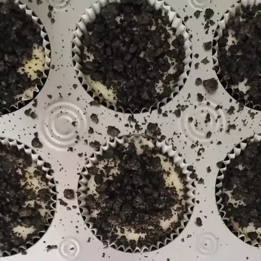

Oreo® Mini Cheesecakes

These bite-sized cheesecakes are easy to make and a big hit at parties. Garnish with melted chocolate or your choice of sliced fruit or berries.
- 2 (8 ounces) packages cream cheese, softened
- 2 eggs, beaten
- 1/2 cup white sugar
- 24 Oreo® cookies
- Move oven rack to middle tier and preheat oven to 350 degrees F (175 degrees C). Line 24 mini-muffin cups with miniature paper liners.
- Beat cream cheese, eggs, and sugar together in a bowl until smooth.
- Put 1 cookie into the bottom of each paper liner. Spoon the cream cheese mixture atop the cookies.
- Bake in preheated oven until nearly set in the middle, about 15 minutes.
- Move tins to a wire rack to cool slightly before refrigerating until the cheesecake layer sets firmly, about 3 hours.